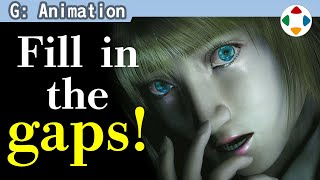
速览
闲聊一个关于动作、印象很深的话题。2002 年的《钟楼惊魂 3》，成了日本著名电影导演深作欣二的遗作。看了会发现过场的演技非常夸张，夸张到让人发笑。据说导演这样谈过：变成多边形的角色失去了人类拥有的各种信息，所以必须相应地演得更大。这老实说令人惊讶：对导演来说应该是第一次做游戏，却如此明确地直击本质，真厉害。游戏中的角色范围很广，但包括动画在内，实际上都是不存在的东西，所以夸张地表演才刚好。即使用动作捕捉，原样也通常用不了；依游戏类型而定，要大幅移动才刚好。角色相对画面的大小也有影响：画面近、角色大还好，但角色小或远，动作就显得相当拘谨。动作游戏还会因博弈、手感等差别很大，但基本是大而堂堂地动；挥剑的动作只想着「让剑挥起来」是不够的。时代和《钟楼惊魂 3》不同，也不是说那样就好，但应该能当某种参考：信息减少，就大幅移动来夸张；同时意识画面上的存在感、大小、操作感，狠狠地大动吧。
1. 《钟楼惊魂 3》的演技 0:03
闲聊一个关于动作、印象很深的话题。2002 年的《钟楼惊魂 3》，成了日本著名电影导演深作欣二的遗作。
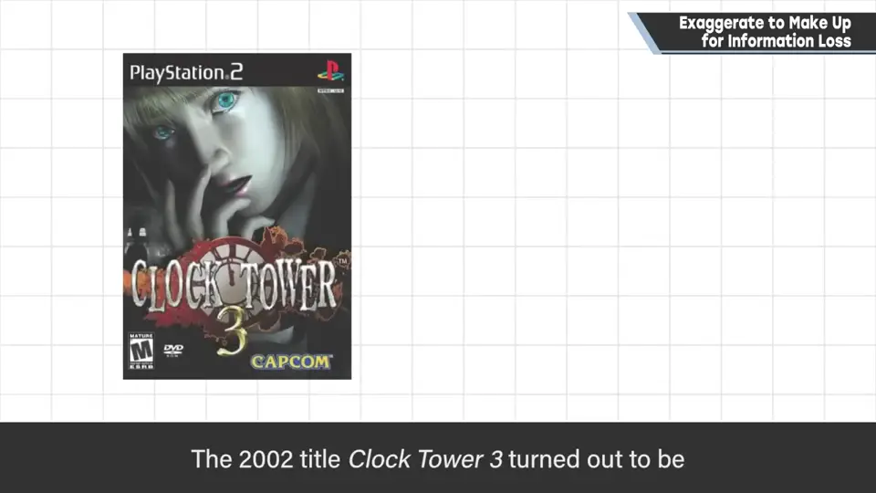
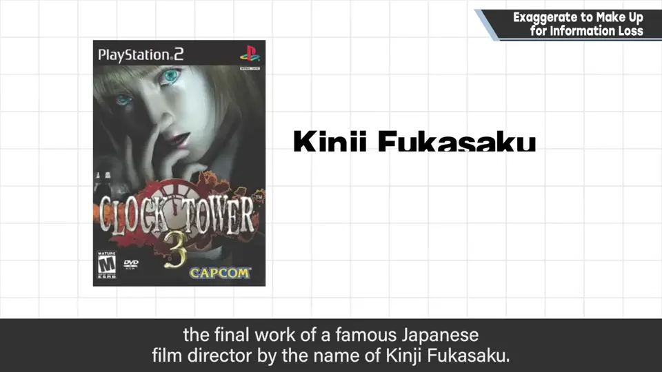
看了会发现过场演技非常夸张，夸张到让人发笑。
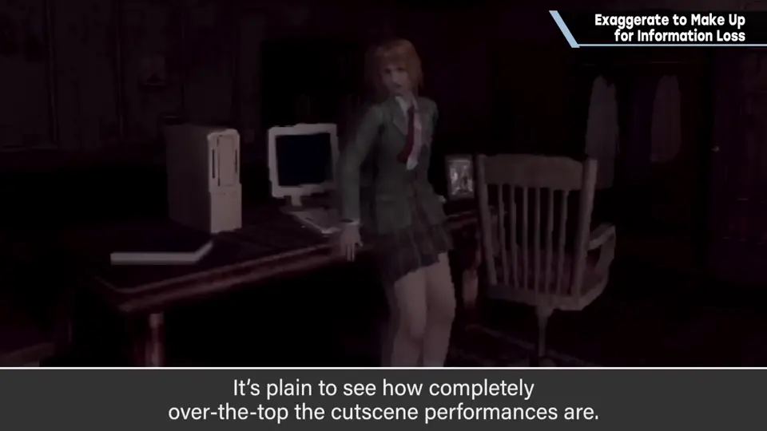
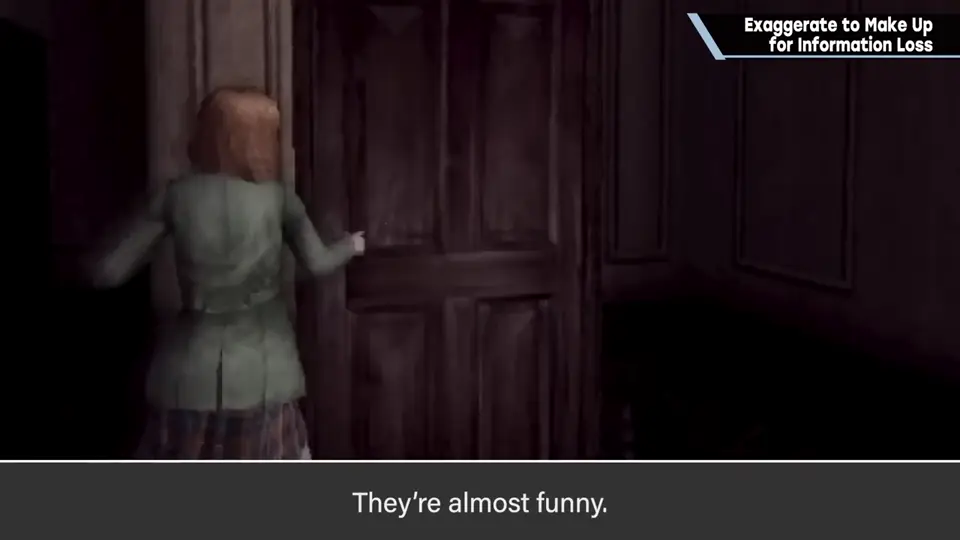
2. 导演的话 0:35
变成多边形的角色，失去了人类拥有的各种信息，所以必须相应地演得更大。
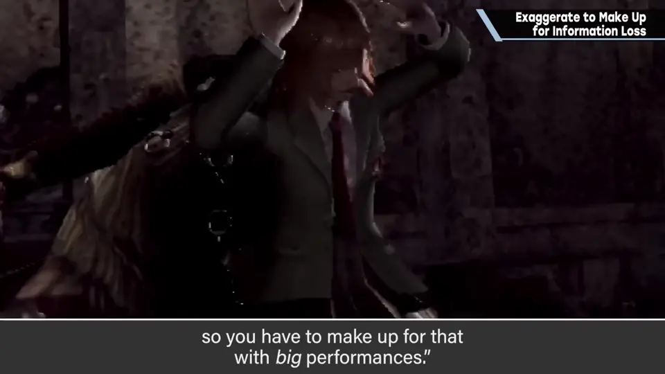
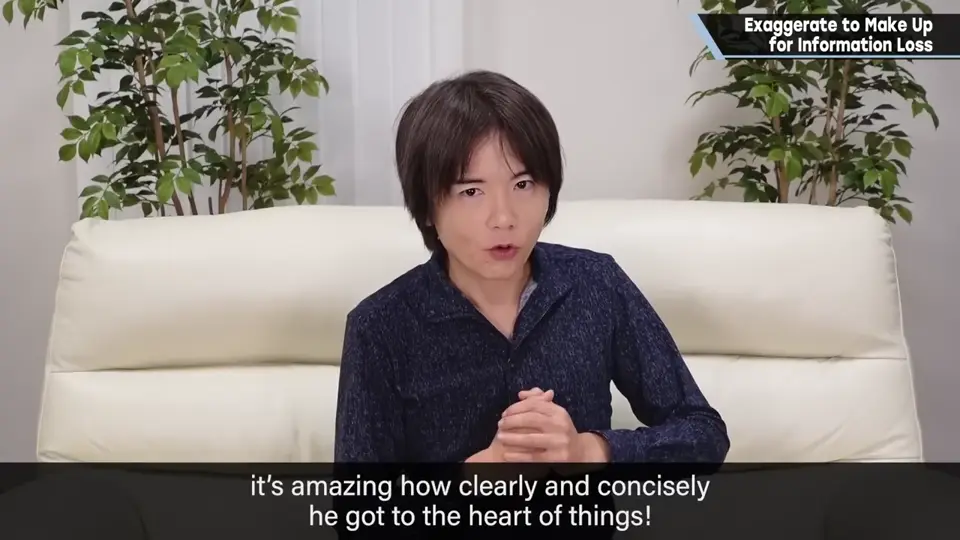
这老实说令人惊讶：对导演来说应该是第一次做游戏，却如此明确地直击本质，真厉害。
3. 游戏角色本不存在 0:58
游戏中的角色范围很广，但包括动画在内，实际上都是不存在的东西。所以夸张地表演才刚好。
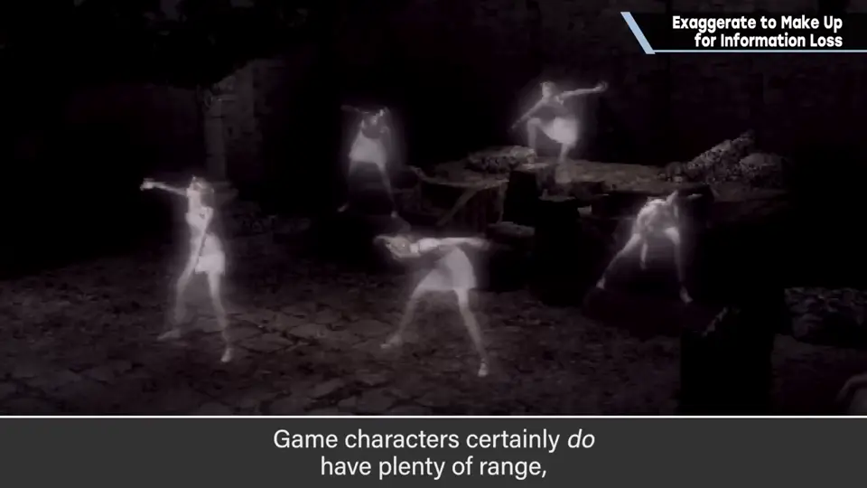
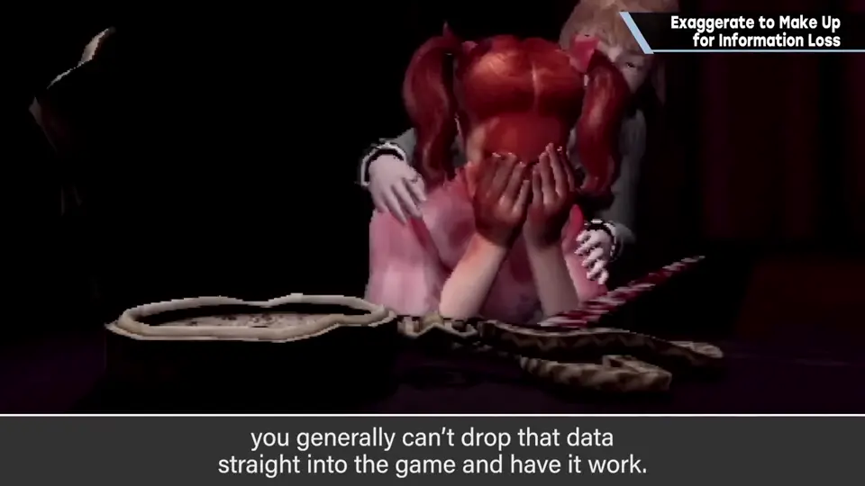
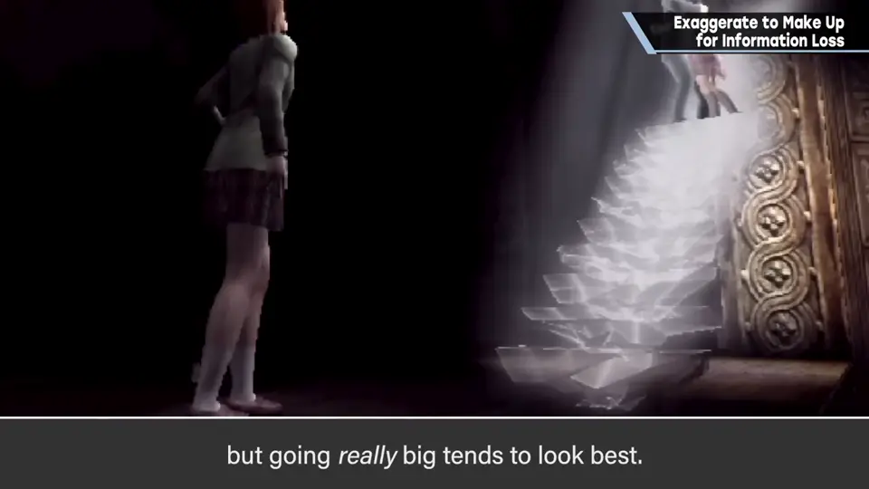
4. 画面大小的影响 1:22
角色相对画面的大小也有影响：画面近、角色大还好；但角色小或者在远处，动作就显得相当拘谨。
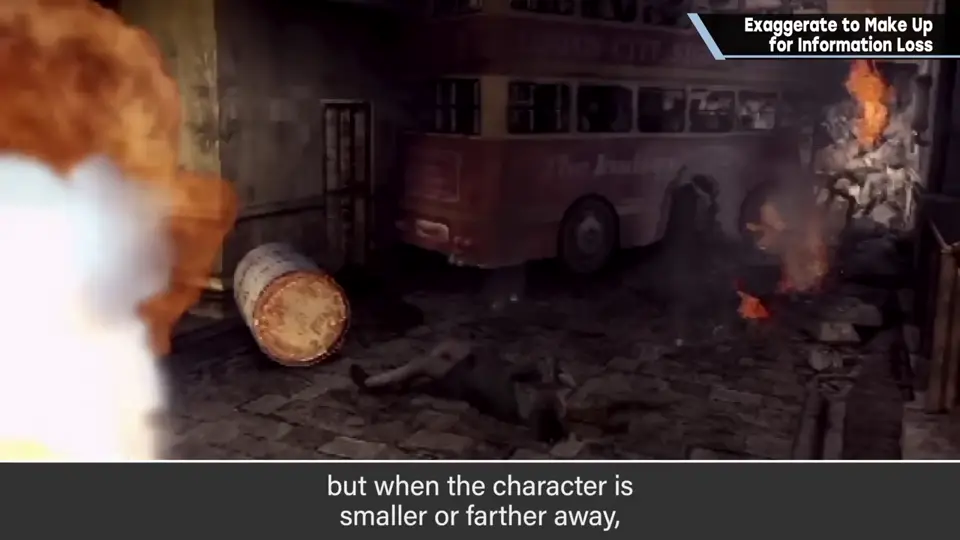
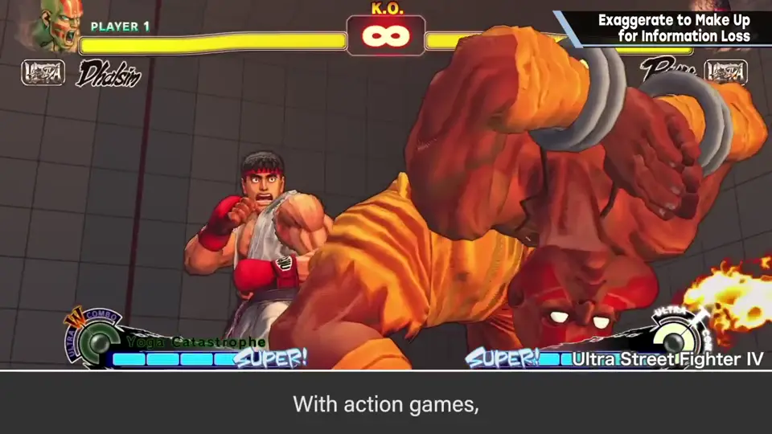
动作游戏还会因博弈、操作感等差别很大，但基本是大而堂堂地动。
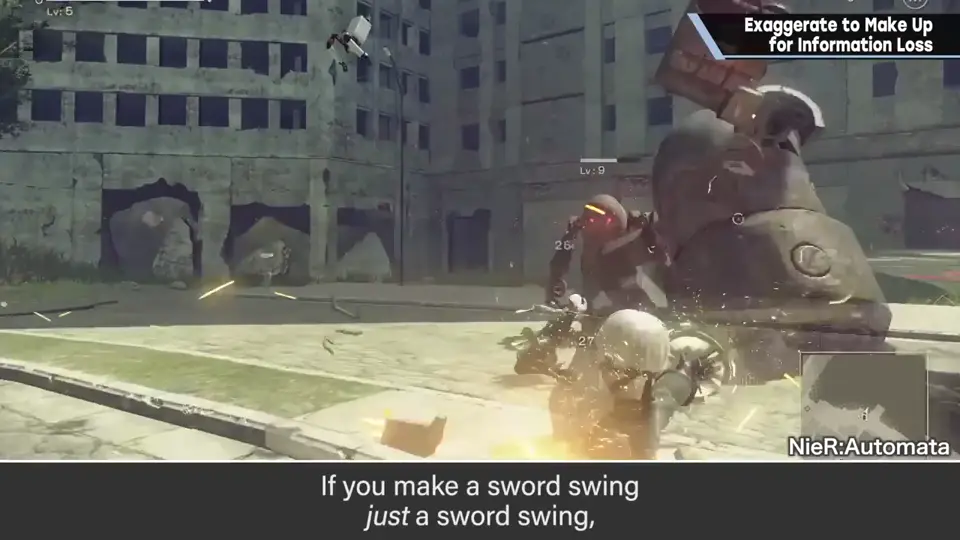
5. 总结 1:56
时代和《钟楼惊魂 3》不同，也不是说那样就好，但应该能当某种参考。
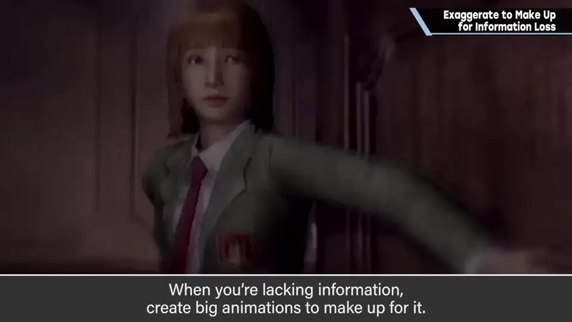
自测题
1. 深作欣二导演如何解释夸张的演技？
多边形角色失去了人类的各种信息，所以必须演得更大。 0:40
2. 角色在画面中的大小如何影响动作？
角色小或远时动作显得拘谨，需要更大的动作。 1:28
3. 动作捕捉数据可以原样使用吗？
通常不行，要大幅加工、移动得更大才刚好。 1:10